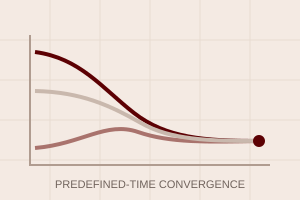

Optimized predefined-time control for high-order nonlinear MASs via ICA and reinforcement learning
Published in ISA Transactions, 2026 JCR Q1
We develop an identifier–critic–actor reinforcement learning framework for optimized predefined-time control of high-order nonlinear systems.